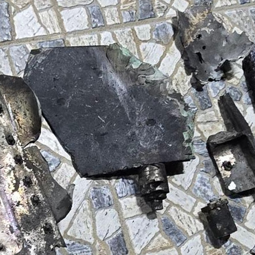
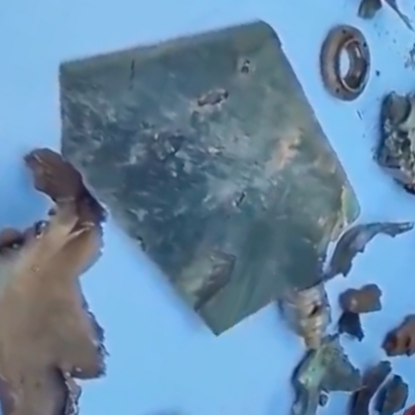
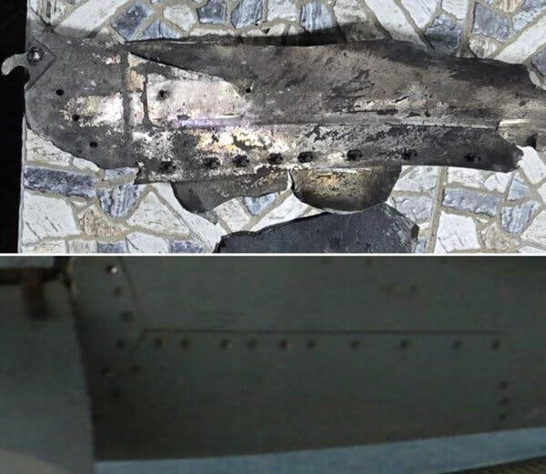

It began like any traditional wedding in southern Iran. The women arrived with their hands elaborately decorated with henna. Children played in the courtyard. A festive meal was about to be served in a room draped with carpets and pillows.
It ended when a bomb brought down the roof, turning a night of celebration into a jumble of dust-coated sandals, torn garlands and blood-soaked rugs.
Dozens of guests, according to a witness and accounts in local news media, had already arrived at the Malahi family’s home and surrounding buildings in the southern city of Kuhestak to celebrate a young bride and groom.
Around 9:30 p.m. on Tuesday, the wedding was struck by a bomb that, according to a weapons expert and a visual analysis by The New York Times, had been released by American forces as they carried out intense attacks in southern Iran. At least five wedding guests were killed, including a 6-year-old boy, and at least 67 other people were wounded, according to Iran’s Red Crescent Society, a humanitarian aid group.
Among the guests was a woman named Motahareh, whose identity was verified by The Times. The night of the wedding, she posted a selfie on Instagram from the women’s henna party the night before — beaming in perfectly applied makeup, a lilac head scarf and flowery robe.
“Last night was the first night!” she wrote. “For the coming nights, should I make these sorts of stories for you or what!!!”
In her next post, uploaded within an hour after the attack, Motahareh is in the same lilac scarf — but now, her eyes are smeared with black makeup, her face covered in red blotches.
“Tonight was supposed to be a night of love and laughter,” Motahareh wrote. “But the wedding turned into mourning, and a sweet night will forever be bitter.” She did not share her last name on her account, which was corroborated, and has not replied to requests by The Times for an interview.
A video of the immediate aftermath of the strike showed the chaotic scene of neighborhood residents with flashlights rushing between damaged buildings as emergency medical workers worked to douse the area with a hose. The Times confirmed precisely where the video had been filmed, which showed features matching satellite imagery of the area and that the video was from Tuesday evening.

Kuhestak, a port city, is close to the strategic Strait of Hormuz. The attack came as U.S. forces said they were retaliating against Iranian attacks on ships and American forces in the region. U.S. Central Command said it had struck communication sites, along with other locations it said were operated by Iran’s armed forces, which include the Islamic Revolutionary Guards Corps.
The attacks on Kuhestak hit a large communications tower near the town’s port. After the tower was struck, it crashed across a street toward a corner store and residential buildings, photos and a video verified by The Times showed.
Another attack hit a building in the residential area where the wedding was being held, around 150 yards from the communications tower, according to the accounts of multiple residents, local officials and videos that were posted by witnesses and verified by The Times.

The Times collected videos of weapons remnants filmed after the attacks on Kuhestak and shared them with Trevor Ball, a former U.S. Army explosive ordnance disposal technician and an analyst at Armament Research Services. He identified the remnants as components of a glide bomb, which is used by U.S. Central Command and not used by Iran’s forces.
Asked about the attack on the wedding and the munitions, a Central Command spokesman, Capt. Tim Hawkins of the U.S. Navy, said: “We are aware of reports, which originated from Iranian state media. The U.S. military never targets civilians, unlike the IRGC.”
Iranian officials have called the attack a war crime, and Iran’s Red Crescent Society said its head had asked the prosecutor at the International Criminal Court to investigate the episode.
In the small towns of southern Iran, weddings are traditionally held in people’s homes, as was the case with the Malahi family. Weddings become a neighborhood event, with men and women gathering in separate houses. The attacks appear to have hit one of the buildings where the wedding was held.
Hamid Kasiri, a teacher, and other witnesses posted videos of the gaping hole in the roof of one building, which Iranian officials said had been directly hit by a U.S. strike. Concrete walls were punctured, doors were shattered, ceilings collapsed and debris was strewed across the area.

Mr. Ball analyzed weapons remains shown in pictures and videos taken at the scene of the strike by Mr. Kasiri, the local teacher, and a reporter for Iran’s state broadcaster, IRIB. Mr. Ball identified the remains as parts of a U.S. glide bomb. A tail fin and distinctive casing were consistent with the Joint Standoff Weapon, or JSOW, he said.
The fin recovered, in the first image below, matches JSOW fins recovered after strikes in Yemen and Venezuela, the latter in the second photo, as seen on the Open Source Munitions Portal, a database of weapon fragments found in conflict zones.


The dimensions of the recovered weapon casing and its distinctive pattern of bolt holes also match those in a reference photo of a JSOW on the weapons database.

A JSOW bomb also appeared to be loaded under the wings of a U.S. fighter jet taking off in a video published by U.S. Central Command on Tuesday alongside the statement that it had conducted strikes on targets in Iran.
The attack on Kuhestak is the fourth episode reported by The Times in which strikes on structures with no military use were hit and civilians were killed. On Feb. 28, the first day of the U.S.-Israeli war in Iran, a U.S. Tomahawk missile hit an elementary school in Minab, Iran, killing civilians, most of them children, Iranian officials said.
Hours later, the United States used several PrSM missiles to strike near a residential area in Lamerd, Iran, killing 21, Iranian officials said. In July, the United States used a 2,000-pound bomb to strike a home in Qeshm Island, killing three civilians, according to Iranian officials.
Among those killed in the Kuhestak attack was Amir-Mohammad Karimi, an exuberant 6-year-old who was starting kindergarten, according to an interview given by his mother to the Red Crescent and published on the group’s official page.
His mother, whose name the Red Crescent did not publish, said her son had been so excited to attend the wedding, he had gone ahead of her with his 14-year-old sister, Kiana. When she heard explosions, the mother said, she ran into the streets to search for her children, and found them covered with dust and shrapnel.
A local photographer named Kian said in an interview that he had been at home about 500 yards from the Malahi family’s house when he heard a strange sound. “Almost like a whistle, a whistle coming from the direction of the sea,” he said. When the bomb struck, he said, “we all heard the explosion.”
Electricity and mobile phone connections went down. The air was thick with the smell of gunpowder. He could hear screams and crying as he headed toward the Malahi house, recounted Kian, who spoke on the condition that his last name be withheld out of fear of government reprisal.
“People were carrying small children in their arms,” he said, “trying to get them to the hospital in pickup trucks and any vehicles they could find.”
Kian said the bomb had struck the section of the wedding set aside for women. “That is why most of those injured are women and children,” he said.
Later that night, Kian said, he was with the father and brother of one of the people who were killed, Mohammad Malahi, 16, as they struggled to identify his body. The teenager was so badly disfigured, he said, that they used the mobile phone found on his body to confirm it was him.
The Fars News Agency, a semiofficial outlet affiliated with the Revolutionary Guards, identified two others killed: Kolsoum Malahi Najandnia, 43; and Zarkhatoun Taheri, 50.
The bride and groom survived the attack, Motahareh, the wedding guest, said in her post.
Visual Investigations Our investigative journalists use evidence that's hidden in plain sight to present a definitive account of the news. Get an email as soon as our next Visual Investigation is published. Get it sent to your inbox.
The Kuhestak wedding victims were taken to Hazrat Abolfazl Hospital in Minab — the same center that treated victims of the strike on Shajareh Tayebeh primary school. U.S. Tomahawk cruise missiles had razed the school on the first day of the war, and at least 175 people were killed, according to the Iranian authorities, most of them schoolchildren.
Ahmad Nafisi, the deputy governor of Hormozgan Province, where both Minab and Kuhestak are, told local news outlets that the United States “has once again committed a war crime in the province of Hormozgan.”
Video taken amid a chaotic crowd at the hospital entrance showed medical personnel waiting with stretchers as wedding guests streamed in for treatment. In one video, adults brought in a young crying boy and a girl with blood running from her forehead.
Adil Haque, an international law professor at Rutgers Law School, said the U.S. military must address the attack “because on its face it seems inexplicable and indefensible.” There was no indication of any military target around the building, he noted.
Motahareh, the wedding guest, wrote in a post hours after the attack, “They weren’t enriching uranium at the wedding, nor was the wedding close to a military area.”
“Damn war,” she added. “God help us.”